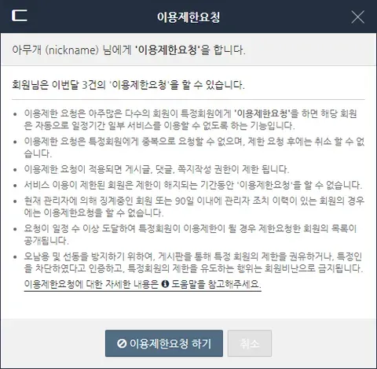

이제 우르르 몰려와서 마음에 안 드는 놈 집중 공격
바로 아닥시킬 수 있음 ㅋㅋㅋㅋㅋ

이제 우르르 몰려와서 마음에 안 드는 놈 집중 공격
바로 아닥시킬 수 있음 ㅋㅋㅋㅋㅋ
병신인가. 그거랑 공식 제재랑 동급으로 보는건가
결국 그건 여론일뿐인거고 저건 처벌이야
겠냐에요
와 진짜 인민재판이네 ㅋㅋ
근데 에타같은데는 옛날부터 하던거아님? ㅋㅋ
?아닌데 뭔 개십헛소리함
에타 신고 누적이면 정지임
음습하네
안돼 그분들 그 단어에 예민해서 이거 보면 계속 아무데나 쓰고 다닌단말이야
이런건 운영자 혼자서 해결해야함
인민재판 ㅋㅋㅋㅋㅋㅋㅋㅋㅋ
개드립도 비슷한거있지않음? 비추많이 쌓이면 과도한 논란 어쩌고 나오던데
비추만 많이 쌓이는거면 그냥 붐베나 유개로 떨어지는거고 공지위반이면 임시로 끌려가는거지
그건 댓글이고 과도한논란은 신고받았을때임
댓글 추비추는 아무영향없음
게시글 추비추는 경험치에(추천은 경험치+, 비추는 경험치-) 영향가고 비추가 추천보다 일정수이상 많으면 유게로 유배가더라
거기서 더 떨어지면 붐베가는거같고
비추가 아니라 신고누적임
그건 비추 쌓여서 그러는건 아님. 비추는 댓글 쓴 사람정도만 보이고 별의미도 없음.
과도한 논란 어쩌고 뜨는건 사람들이 신고해서 관리자가 와서 규정 안 맞는지 확인하고 삭제한거뿐임.
여기도 지 입맛에 안맞으면 ㅇㄱㄸ 붙이면 그만인데 뭐
ㅇㄱㄸ도 따지고 보면 굉장히 주관적 개념 아니냐
ㄹㅇㅋㅋㅋ 서로가 불리한거 나오면 ㅇㄱㄸ임
그래서 이제 ㅇㄱㄸ로 지랄하면 걔가 유배가잖슴. 예전엔 ㅇㄱㄸ 빡세게 잡는다고 맘에 안 들면
댓글에 ㅇㄱㄸ 내용 써서 글까지 날려버렸는데 이젠 댓글로 그지랄하면 댓글 쓴놈만 잡아감.
그리고 ㅇㄱㄸ는 공지에 하나하나 나열 되어 있음. 주관적 개념이 아니라 공지에 나온거 금지라는 소리임.
ㄴㄴ ㅇㄱㄸ는 주관적 아님. "여기까진 정치(ㅇㄱㄸ)아니지 않나?" 라고 생각이 드는 순간 이미 옳그떠인거.
누군가가 옳그떠로 걸어넘어질만한 껀덕지이면 옳그떠가 맞은거임. 옳고그름을떠나 언급될만한 행동을 하지 말라는 거니까. 근데 보통 옳그떠라고 하면 '내 성향을 거부하고 뭐라고하네? 이샛기 반대쪽이구나!' 하고 생각해서 '지들 맘에 안들면 옳그떠라고 하더라'라는 생각으로 잘못 가게되는거임. 실제론 그런게 아닌데
신고 악용도 아니고 대놓고 특화기능이네ㅋㅋㅋ
가즈아
사이트 이용자수 거의 1/4라던데 ㅋㅋㅋ
내가 당하는 시민독재는 있어선 안되지만 내가하는 시민독재는 열렬히 시행하시는 걸 원하는 집단이 이용하는 사이트 다운 시스템이네 ㅋ
나는 늘 궁금한게 갑자기 어떻게
‘자유를 너무 준거 같으니 이제 규제해보자‘
이렇게 사고회로가 흐를 수가 있냐는거임
자유의 기치 아래 살면서 그게 얼마나 중요한지 알거고 그걸 쟁취해낸 흐름도 다 봤을텐데, 저 지랄을 한다는게 믿기지가 않음
지들 맘에 안드는거 입막음하려는거지 이기
전제가 틀린게 자유를 너무 줬다고 생각하지 않음. 유불리로만 하는 판단이 익숙한 세대라 그게 이상하다고 느끼지 않아서 잘못된 것도 못느낄뿐
어짜피 그런 사람들만 남은 사이트고 사이트 규칙 바꾼다고 새로운 사람들 들어올 사이트도 아니라 남은 회원들 입맛에 맞게 굴려야지
그렇게 침묵하던 개붕이들에게 그들이 찾아온 개드립을 맞이했다
인민재판 도입 ㄷㄷ
도편추방제 뭐 이런건가
개드립도 비슷할껄 저렇게 공지를 안해서그렇지
아님ㅇㅇ
진짜 개병신 암세포 새끼들 ㅋㅋㅋ
근데 여기나 저기나 다를 바 없는게 조금만 대세여론에 반기 드는 댓글 쓰면 비추폭탄에 온갖 비아냥과 패드립이 대댓글로 쭉 달리잖아